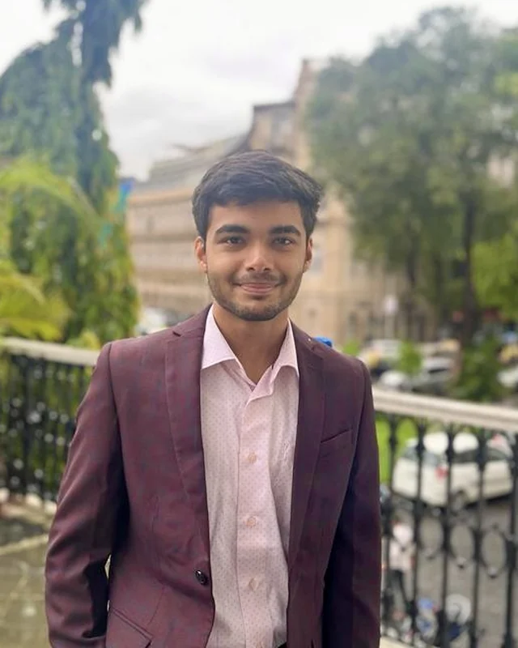

Mumbai, India · Data Scientist
Ismail Wangde
Turning real problems into AI tools people use.
Data Scientist at Fundly.ai, building AI commerce advisor and credit risk models. Before that, 4TB pipelines at InventoHub and medical imaging research at Nanavati Hospital.

Cookassist
A Hindi voice assistant for a home kitchen — it reads the recipe out loud, answers questions mid-cook, and works out what needs prepping for the week.
I built it to kill a daily manual routine in my own house, not as a portfolio demo. That constraint drove every decision: it speaks and listens in Hindi.
It checks the pantry before you start, walks the steps one at a time, and projects tomorrow's prep from tonight's plan.
- Python
- FastAPI
- SQLite
- Offline PWA
- LLM
- Hindi TTS / ASR
Transparent equity research, built as a counter to black-box “AI stock picker” products.
Every verdict shows the evidence for it and against it, each with the number behind it. No blind buy or sell call.
Underneath is a 12-module fundamental scoring engine and a QuantConnect/LEAN harness that tests strategies against real trading costs, and rejects the ones that don't survive.
My trading knowledge, not the engineering, was the limit here. The biggest lesson was how few strategies hold up once real costs are counted.
- Python
- QuantConnect / LEAN
- pandas
- Backtesting
istock
Other things I've built
Scroll sideways · click any card for detail
Systems I've shipped
Scroll sideways · click any card for detail
Before Fundly
Scroll sideways · click any card for detail
Research
Scroll sideways · click any card for detail